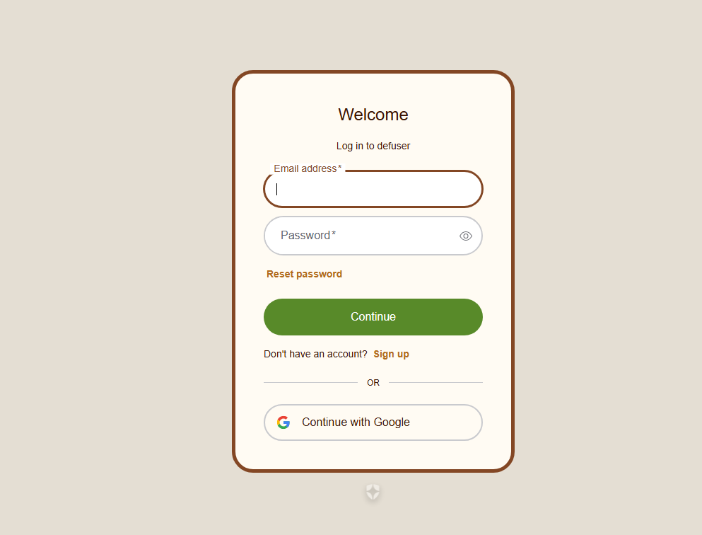
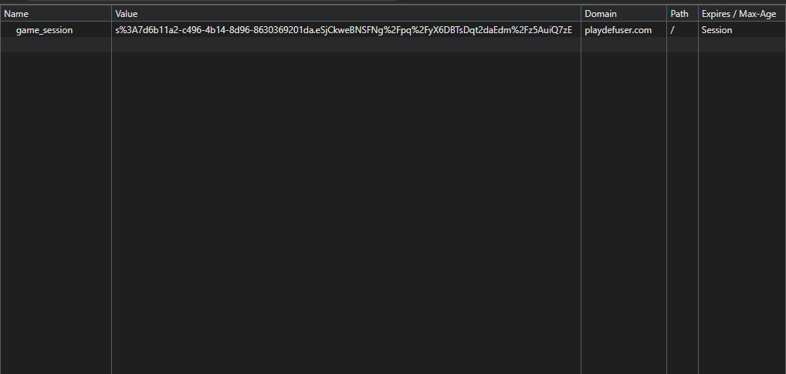

This was a personal project done to help fix an issue I had: me and my friends enjoyed playing games like code names, but did not like the setup and the lack of customization in words used. As such, I made a website that handled all the setup and let users create their own decks of words so they could make fun themed decks to pay with friends.


Auth0 was used in order to offload authorization and security management onto a trusted 3rd part site instead of trying to implament every part of it myself.
GraphQL subscriptions are used in order to maintain an active connection and ensure concistent game states between players.
Once authorized, users are able to create and share custom decks in order to tailor their expeirnece to themselves.
While users must be logged in to create decks, the website uses session cookies in order to let guests still play with public decks or already made lobbies.
This project was created alone over a period of approximately 6 months. It is a digital implementation of the physical board game 7 Wonders Duel that handles all gameplay and rules functionality for the user. This was created purely as a learning experience and is not publicly available anywhere.
Game start involves two players selecting their starting wonders from a randomly selected group of eight wonders.
The cards all extend the same base class and use polymorphism so all systems can interact with them without needing to differentiate type.
Effects were created using a base interface that each affect class inherits. Wonders would then trigger any number of these effects one at a time allowing for rapid creation of new wonders.
This was the final project of a college game programming course. Working in a group of three students, we developed a 3/4 view action game with multiple enemies, levels, and buffs.
This boss was implemented with four distinct states that controlled the entire fight and allowed for more attacks to be easily added on when time permited.
I developed multiple enemies with different attacks that all inherit from the same base script.
Multiple buffs were developed that each interact with the users in different ways.